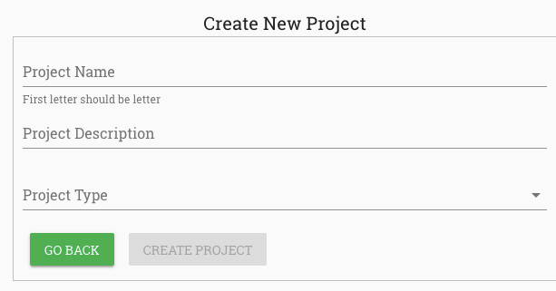
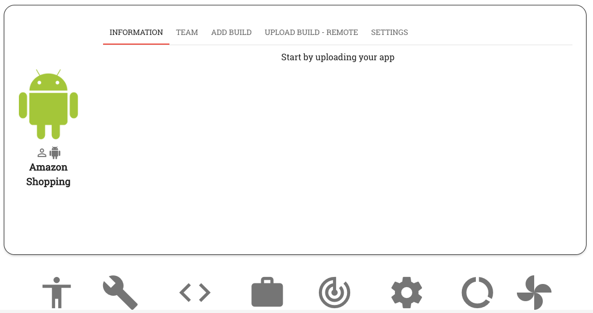

3. Create Project¶
On RobusTest, all activity related to the testing of a mobile app will be part of a Project.
A Project is a logical place for all builds, test cases, test suites, test runs and test reports associated with the testing of the app. It also facilitates collaboration within the team.
Creating a project
Once you have logged into RobusTest, you will find a ‘Create Project’ button on the landing page. To create a project, click on this button.
On the ‘Create New Project’ page that opens up, you need to enter the following information:
Project Name - in case of app testing, this is usually the name of the app under test (AUT). This field is mandatory
Project Description - provide a brief description of the purpose of cresating this project
Project Type - you have the option to create one out of 4 types of projects:
- Android App Project
- iOS App Project.
- Mobile Webapp Project
- Device Only Project
You can find more information here: Types of Projects

Click on the ‘Create Project’ button. The project has now been created and you will find yourself on the Project Dashboard.
E.g., after creating an Android project the project dashboard looks like below image.

Now that you have created a project, the next step is to upload the app build to be tested * For an Android project, this will be an apk file * For an iOS project, this will be an ipa file
To upload a build, click on the ‘Upload new build’ button (i.e., the ‘+’ icon) on the Project Dashboard
This step is not applicable to Mobile WebApp and Device Only projects
You are now all set up to begin testing
Before we do so, let’s get to understand the Project Dashboard a little more